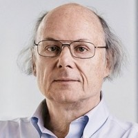

Введение
Бьёрн Страуструп (дат. Bjarne Stroustrup) — автор языка программирования C++.
Страуструп стал первопроходцем в области использования объектно-ориентированной и обобщённой парадигм программирования в области создания программных приложений, где эффективность является приоритетным свойством, таких как симуляторы, графика, пользовательские интерфейсы, прикладные системы, системы для научных вычислений.
Что бы нового мы ни совершали, мы должны дать возможность людям переходить от старых инструментов и идей к новым.Бьёрн Страуструп
Книга Страуструпа «Язык программирования C++» — одна из самых широко читаемых книг из своей области, которая была переведена на 19 языков. Следующая книга, «Дизайн и эволюция C++», открыла много нового в описании языков программирования: новые идеи, идеалы, проблемы. В дополнение к своим пяти книгам Страуструп опубликовал более сотни академических и других популярных статей.